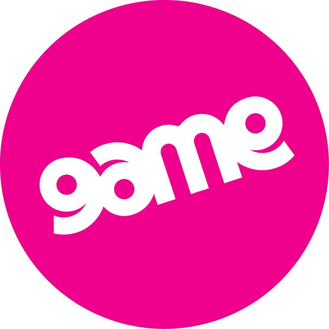
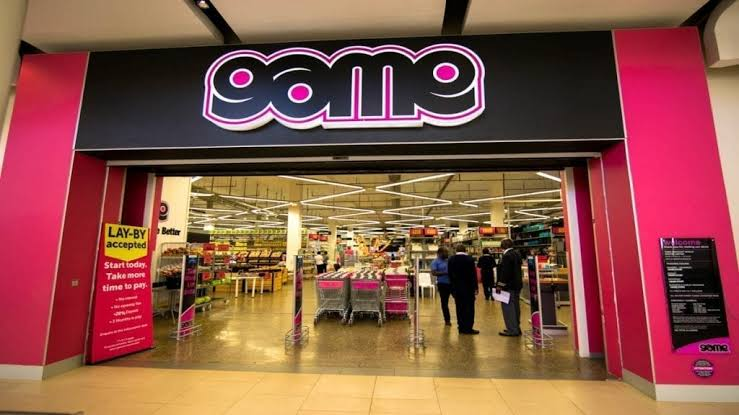
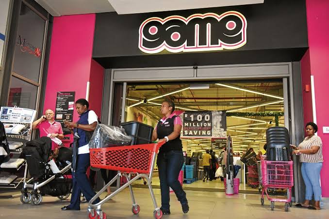
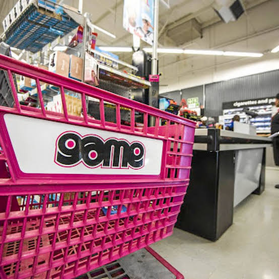

GAME
Massmart Holdings Limited (JSE:MSM ) is a South African firm that owns local brands such as Game, Makro, Builder's Warehouse and CBW. It is the second-largest distributor of consumer goods in Africa, the largest retailer of general merchandise, liquor and home improvement equipment and wholesaler of basic foods.
  